The Android multimedia framework includes support for playing variety of common media types, so that you can easily integrate audio, video and images
into your applications. You can play audio or video from media files stored in your application's resources(raw resources),
from standalone files in the filesystem, or from a data stream arriving over a network connection, all using MediaPlayer APIs.
The following classes are used to play sound and video in the Android framework:
MediaPlayer
This class is the primary API for playing sound and video.
AudioManager
This class manages audio sources and audio output on a device.
Permissions
Before starting development on your application using MediaPlayer, make sure your manifest has the appropriate declarations to allow use of related features on the Manifest.xml.
Internet Permission - If you are using MediaPlayer to stream network-based content, your application must request network access.
Wake Lock Permission - If your player application needs to keep the screen from dimming or the processor from sleeping, or uses the
MediaPlayer.setScreenOnWhilePlaying() or MediaPlayer.setWakeMode() methods, you must request this permission.
In this section we're going to implement a basic audio player with 3 buttons play , pause and stop
like you can see in the image below.
The first thing we are going to do is create the raw directory inside res and save the audio or audios that we want to play.
In our case you can download it from here .
Exercise. Create an audio or video player with your own buttons. You will have to play 4 or 5 audios / videos. We will have a button to:
Play/Pause: Iniciará o pausará la reproducción según el caso.
Stop: Para la reproducción
Track ahead: Go to the next track if there is more
Track back: Move to the previous track if it is not the first
Fast Forward: Fast forward 10 seconds, if it remains more than 10sec, the track
Fast Rewind: Rewinds 10 seconds, if there are less than 10 seconds it goes to the beginning.
Seek bar: It will indicate at all moment, the progress of the audio or video being 0 the begining of the track and max its duration.
If we change seek bar's poition the audio or video will seek to this position.
Camera
We're going to use CameraX. CameraX is a Jetpack
support library, built to help you make camera app development "easier".
It provides a consistent and easy-to-use API surface that works across most Android devices, with backward-compatibility to Android 5.0(API level 21).
Follow the next link and do and study the codelab about camerax
Lottie is an open source animation file format that’s tiny, high quality, interactive, and can be manipulated at runtime.
You have to get a json file and save it into asset dir or raw dir
You can get it from https://lottiefiles.com/. Here there are a lot of animations and many of them are free.
You need to add Lottie's dependency in the gradle:app
Exercise: Starting from the cameraX application, save it to disk and when taking a new photo and if everything goes well, a Lottie animation will be played.
Find and choose an animation of your liking.
In addition, the your Activity will have a button and an ImageView. By clicking on the button you will see the photo saved in the ImageView.
To achieve this you can use BitmapDescriptory.decodeFile (pathName: String) with returns you a Bitmap that you can use in the ImageView
Maps
Introduction
We are going to start working with the Google Maps API, we can work with this API without using real-time location,
for example, for an App that simply shows places of interest, we could even calculate the distance between them, makes it clear that what is “beautiful” is App's that
integrate said location. Consequently, first of all, comment that there are basically two ways to acquire location data,
the obsolete but simple android.location, and the Google Location Services API.
The first is not recommended by even Google, as can be seen in the following screenshot.
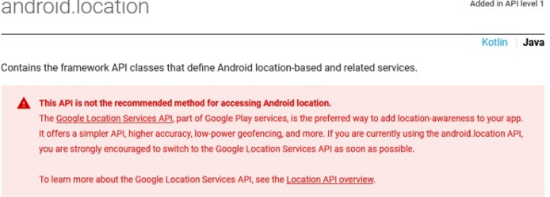
We will then use the second, for which we will require Google Play Services,
which is a huge set of common services or utilities, including location
Therefore, it installs in the Android Studio Google Play Services. Go to Tools> SDK Manager> Android SDK menu>SDK Tools tab, select the Google Play Services CheckBox and OK.
Adding Google Play services
Google Maps API
We are going to study the following points practicing at the same time, therefore it is recommended to try each one of them.
Create a App choosing Google Maps Activity as a template, we call it myMaps. We use Kotlin and leave the minimum API at 23
(it will NOT work on versions lower than Android 6 Marshmallow), not legacy.
The reason for using this version is that, from this API, to use the localization and other services,
it is required to ask for permissions at runtime, we will see what this means later
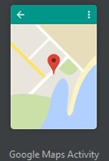 Google Maps Activity
If we now run the App on our real device, although the App opens, we will see that it does not work and that the screen appears blank.
This is because we have not yet incorporated an API KEY to the project to use the Google Maps API.
This, we must insert it into a meta-data tag in the AndroidManifest.xml, as seen below, it is already prepared.
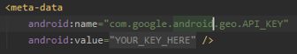 AndroidManifest.xml meta-data
On the other hand, we can see that the android: value attribute is actually pointing to a string type resource with name = "google_maps_key",
since its value is actually @ String / google_maps_key, this resource is inside the google_maps_api file.xml,
inside *\values
To get this KEY, we will need two things, one is the package name(which we know),
and the other is the unique signature key that Google gives to each Android developer, we have already consulted the default signature,
and that is the one that we are going to use since the template has been prepared for it. In the google_maps_api.xml file,
they already give us all this information.
We can also access it through the gradle option located to the right of Android Studio by executing gradle signingReport
The easiest way to obtain the API KEY is to use the help provided by the template that we have created, since it shows us the name of the package and the
signature key by default, open google_maps_api.xml, you will see both data there, compare the key shown with the one obtained
before via command. As you can see in the first link of the previous file, our default signature key and the name of our package are
already found in the URL query string, therefore, if we follow that link, we already send the server said data to provide us with the
Google Maps API KEY for our project.
google_maps_api.xml
<resources>
<!--
TODO: Before you run your application, you need a Google Maps API key.
To get one, follow this link, follow the directions and press "Create" at the end:
https://console.developers.google.com/flows/enableapi?apiid=maps_android_backend&keyType=CLIENT_SIDE_ANDROID&r5E:3B:C5:F8:7A:E4:XXXXXXX....XXX:AC:41:C3:99:6A%3Bcom.catata.googlemapsexample
You can also add your credentials to an existing key, using these values:
Package name:
com.catata.googlemapsexample
SHA-1 certificate fingerprint:
5E:3B:C5:F8:7A:E4:XXXXXXX....XXX:AC:41:C3:99:6A
Alternatively, follow the directions here:
https://developers.google.com/maps/documentation/android/start#get-key
Once you have your key(it starts with "AIza"), replace the "google_maps_key"
string in this file.
-->
<string name="google_maps_key" templateMergeStrategy="preserve" translatable="false">YOUR_KEY_HERE</string>
</resources>
In line 7 we see the URL that will help us to create the API KEY
In line 8 our package name
In line 15 our debug KEY SHA-1
Through the URL we access the console where we will have to select or create a new project. In our case it will be to create a one.
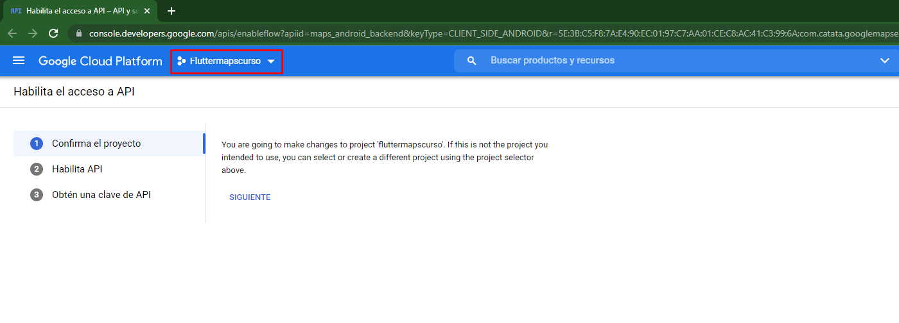 Google console
We select a project.
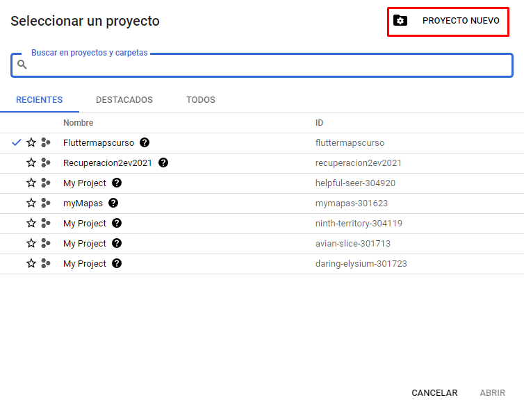 project
We choose the name of the project and the organization if we want to have it organized. And we give you to create the project
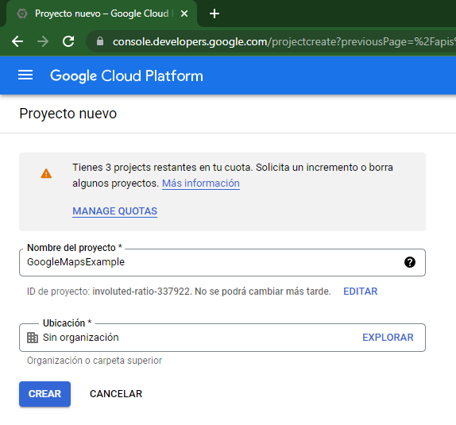 Project Name
Once the project is created, we select it and click the next button
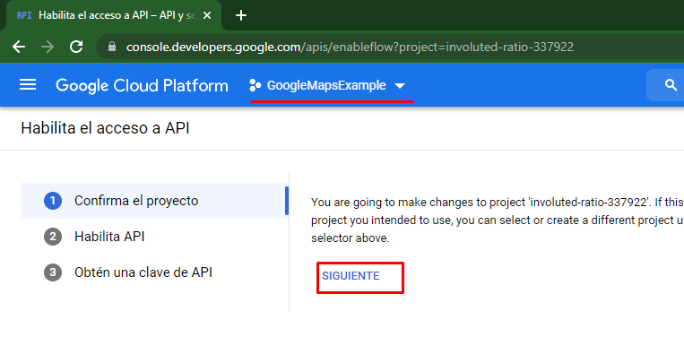 Select created project
Click on the enable button
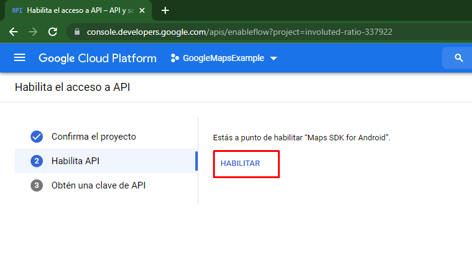 Enable Maps SDK
Click on the button to create the API KEY
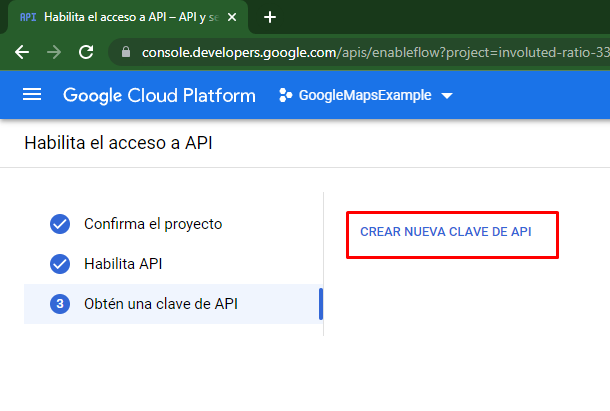 Create API KEY
We already have the API Key created, now we must copy it into the google_maps_key field of the String tag in
google_maps_api.xml file
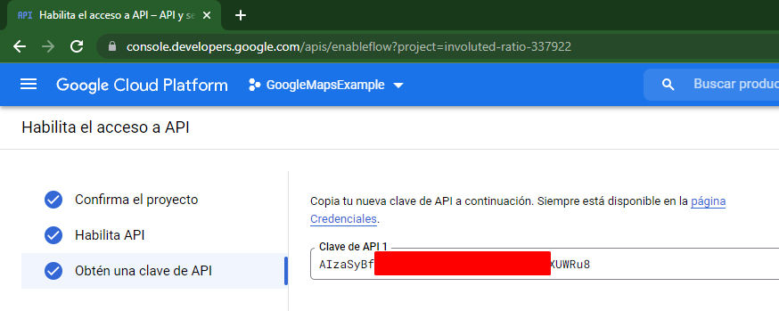 API KEY created 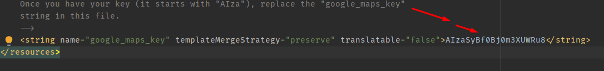 Set your API Key here
If we run now it should work.(it does not require locating activated at the moment)
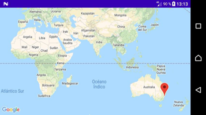
NOTE : When using location it is recommended to use real devices.
However, if simulation is required in Android Emulator, you must have a machine created with an image that has Google APIs.
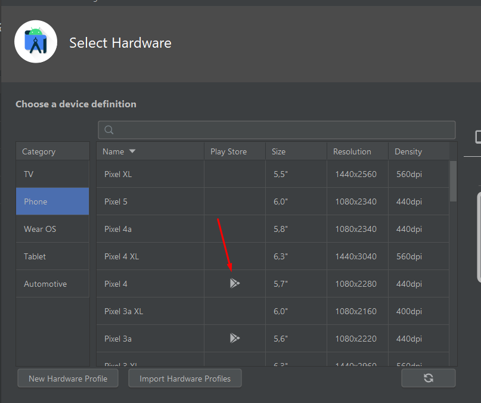
On the other hand, the locations are generated manually, in the extended controls
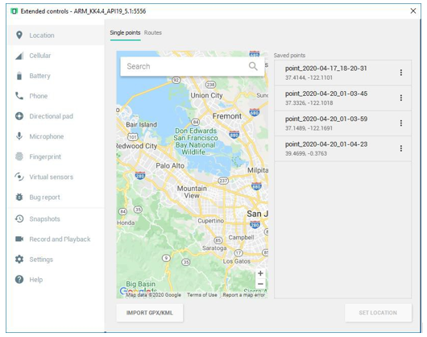
We are now going to review two aspects of the generated template, first the functionality, and secondly the initially generated code
As for functionality, we immediately see the marker(permanently pointing to Sydney, southeast of Australia), and a Google icon in the lower left.
If we click on the marker, it will show us a title with the name of the place(in this case “Marker in Sydney”),
and two icons will appear at the bottom right, the first is for GO(navigate to the place), and the second to show location
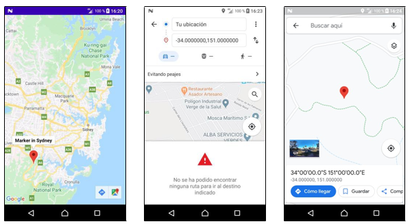
If we double-click on any place on the map repeatedly it is enlarged, using the events of two fingers we can also enlarge, reduce or rotate,
in the latter case, an icon in the form of a compass appears on the upper left, which we allows to return the center to the north.
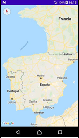
As for the code, we are going to review the important thing next
If we wanted to use the fuzzy location permission, which is the one obtained as a consequence of using the signal from the mobile phone or WiFi antennas,
we would use the ACCESS_COARSE_LOCATION permission, obviously this permission is essential for indoors. We also realize that
the activity that is initially launched thanks to the intent-filter is MapsActivity
Regarding activity_maps.xml, just note that it is a fragment , with id android:id="@+id/map ".
And to finish, in MapsActivity.kt we visualize the initial code.
class MapsActivity : AppCompatActivity(), OnMapReadyCallback {
private lateinit var mMap: GoogleMap
override fun onCreate(savedInstanceState: Bundle?) {
super.onCreate(savedInstanceState)
binding = ActivityMapsBinding.inflate(layoutInflater)
setContentView(binding.root)
// Obtain the SupportMapFragment and get notified when the map is ready to be used.
val mapFragment = supportFragmentManager
.findFragmentById(R.id.map) as SupportMapFragment
mapFragment.getMapAsync(this)
}
/**
* Manipulates the map once available.
* This callback is triggered when the map is ready to be used.
* This is where we can add markers or lines, add listeners or move the camera. In this case,
* we just add a marker near Sydney, Australia.
* If Google Play services is not installed on the device, the user will be prompted to install
* it inside the SupportMapFragment. This method will only be triggered once the user has
* installed Google Play services and returned to the app.
*/
override fun onMapReady(googleMap: GoogleMap) {
mMap = googleMap
// Add a marker in Sydney and move the camera
val sydney = LatLng(-34.0, 151.0)
mMap.addMarker(MarkerOptions().position(sydney).title("Marker in Sydney"))
mMap.moveCamera(CameraUpdateFactory.newLatLng(sydney)
}
}
Obviously a lot of code is missing here, due to the complexity of Maps everything works through libraries. It then extends the AppCompatActivity
class, and implements the OnMapReadyCallback interface(since java does not support multiple inheritance).
Inside the class create the reference for the mMap object of the GoogleMap class, which will be our base object to work with. In the
onCreate() use setContentView() to relate to the layout activity_maps,
and then manage the fragment with id map, asynchronously loading the map into the fragment.
By means of the onMapReady() response function, when it is ready, it loads the data into mMap, and from here on, we can use it.
In line 32, we see how he creates an object with a fixed location using LatLng(,) , using latitude -34 and longitude 151, in the following lines,
add a marker in that place using addMarker() whose title is "Marker in Sydney ", and move the camera to that point using moveCamara().
Would it cost you a lot to modify it, so that the LatLng object is called torrent, and that the intersection of parallel 39.4295152 with the meridian -0.4660814 is shown on the map, also with the title "IES Serra Perenxisa"?
I don't think so, but, for now, surely you have had to expand the location manually.
The time has come to expand our knowledge of the options we have available to tune our project with Google Maps.
Before continuing, change the title that appears under the App icon, go to strings.xml and change the text of title_activity_maps to
<string name="title_activity_maps"> myMaps .
Map Options
We are going to see some of the most important options on the map
LatLng() => .LatLng(double latitude, double longitude); // Create a locate point
Example: LatLng torrent = LatLng(40, 0);
AddMarker() => .addMarker(MarkerOptions().Position().Title());// Add bookmark with title
Other options: .snippet("Inhabitants: 180000") // Add extra information below the title
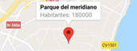
It is possible to show or hide the title / snippet by code(without pressing the Marker), it would be like this.
To show it would be marker.showInfoWindow() To hide it would be marker.hideInfoWindow()
It is also possible to assign an event to the title/snippet, so that when we click on them we do some action.
To achieve this effect, first we must also implement the GoogleMap.OnInfoWindowClickListener in our class, therefore,
now the double implementation will be like this(separated by commas): OnMapReadyCallback, GoogleMap.OnInfoWindowClickListener
Next we add in onMapReady() the line mMap.setOnInfoWindowClickListener(this),
and outside of onMapReady() we insert a response function onInfoWindowClickListener() :
override fun onInfoWindowClick(marker: Marker?) {
Toast.makeText(this, "Marker pressed on: \ n $ {marker? .Tag}($ {marker? .Position? .Latitude}" +
"$ {marker? .position? .longitude})", Toast.LENGTH_SHORT) .show();
}
Notice how it reads the fixed position with marker.getPosition() . Latitude and marker.getPosition().
Longitude, it also supports other interesting information like title with marker.title .
Instead of reading the location or the title as in the previous photo, it could be interesting,
to have previously saved some information or Tag(not visible) in the Marker and read it now by pressing.
To save a non-visible label in the marker we must obtain a reference to it when creating it, and then use it to add the label through .setTag("mytag"),
then it would be read through .getTag(), let's see an example:
marker.tag ="city"
...
...
marker.tag // I could read it later in onInfoWindowClick()
Notice how a click counter could easily be made, since after reading it we could save it again with +1, marker.setTag(marker.getTag() + 1)
, it would also be valid to act in one way or another depending on the type of Marker, that is, it would be worth to be able to identify it.
.icon() //Allows you to tune the Marker icon, for example change the color, or make it an image
.icon(BitmapDescriptorFactory.defaultMarker(BitmapDescriptorFactory.HUE_AZURE)) // Blue color
.icon(BitmapDescriptorFactory.fromResource(R.mipmap.busmarker)) // Image from resource
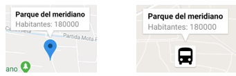
Example with everything so far:
val marker = mMap.addMarker(MarkerOptions().Position(LatLng(40, 0)).Title("Park")
.snippet("from the meridian").icon(BitmapDescriptorFactory.fromResource(R.mipmap.park)));
marker.setTag("parks");
We can also add an event listener to the Marker itself, for example.
Other options: mMap.moveCamera(CameraUpdateFactory.zoomTo(15)); // Change the zoom(0 by default, range 0-21, floats are described by an f,
example 6.5f.). Relationship between the zoom and what is expected to be displayed: 1-World 5- Continent 10-City 15-Streets 20-Buildings.
We can generate a coordinate grid, that is, an area, and automatically calculate the center, to place the camera there, with a specific zoom. Example:
val MyAREA = LatLngBounds(LatLng(37.5, -3.0), LatLng(41.5, 2.0))
mMap.moveCamera(CameraUpdateFactory.newLatLngZoom(MyAREA.center, 7.5f))
It is possible to consult and set the minimum and maximum accepted zoom, as well as the current one.
.setMapType() => .setMapType(cteTipodemapa) //Configures map type
Example:
mMap.mapType = GoogleMap.MAP_TYPE_HYBRID
Type can be:
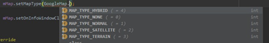
.getUiSettings () => Allows you to configure various graphic aspects.
Example 1: mMap.getUiSettings (). SetZoomControlsEnabled (true)
Activates +/- controls at the bottom right that allow you to zoom in or out. Having touch gestures seems trivial, but it could be ideal for people with reduced mobility.
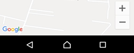
Example 2: mMap.getUiSettings().SetCompassEnabled (false)
Uninhibit the compass icon that appeared when rotating the map.
Example 3: mMap.getUiSettings (). SetRotateGesturesEnabled (false)
Prohibits the ability to rotate the map with touch gestures.
Example 4: mMap.getUiSettings().SetMapToolbarEnabled(false)
Uninhibit the icons on the bottom right that appeared when pressing a marker.
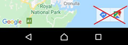
.setOnMapClickListener () => Assign an onClick listener to the map itself. Example.
.animateCamera() => Allows you to create animations while positioning the camera.
Example: Simulates “flying” between one point and another (-_-)
val SYDNEY = LatLng(-33.88,151.21)
val MOUNTAIN_VIEW = LatLng(37.4, -122.1)
mMap.moveCamera(CameraUpdateFactory.newLatLngZoom(SYDNEY, 15f)) //Starts with zoom of 15 zoom
mMap.animateCamera(CameraUpdateFactory.zoomIn())
mMap.animateCamera(CameraUpdateFactory.zoomTo(10f), 5000, null) //5 seconds
val cameraPosition = CameraPosition.Builder()
.target(MOUNTAIN_VIEW) //final destination
.zoom(17f) //new final zoom
.bearing(90f) //camera orientation to the east
.tilt(30f) //camera to 30 degrees
.build();
mMap.animateCamera(CameraUpdateFactory.newCameraPosition(cameraPosition))
.setMapStyle() => Allows importing custom map styles (Custom map) from JSON or XML.
We need to create the raw folder, from App> New> Android resource directory
We copy inside style_json.json , it can be moved directly by dragging (then open the json with its own
Android Studio to study it). style_json.json
Url : Easy to use online style editor (allows you to create a style and export it directly to JSON). Note that there is a new tool for editing styles https://mapstyle.withgoogle.com/
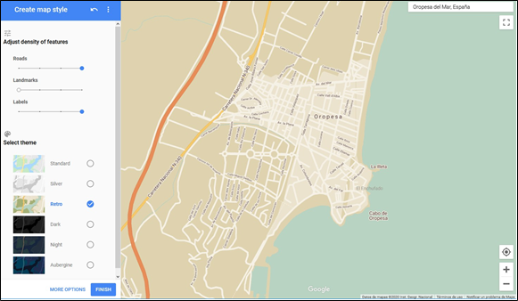 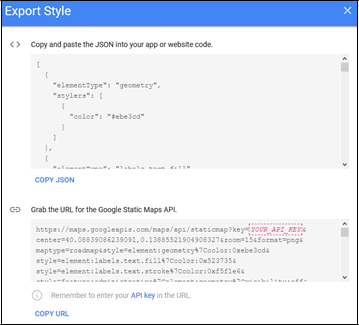
.setMyLocationEnabled(true) => Activates an icon in the upper right part, which when pressed allows the Google Maps API to find us,
and place the camera at that point (requires having the active location).
But it has a problem, this option requires making sure before its execution, and unequivocally, that our App has the location permission activated,
otherwise, the App will do what is known as a “crash”.
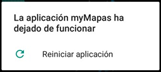
NOTE: We are not referring to having the location active on the device, we are talking about express permission to the specific
App to access the location.
Formerly these permissions were granted by the user when installing the App, but since Android 6.0 (API
23) is no longer like that. The philosophy since then is that the permissions considered high risk, such as location, the user has to allow them at runtime from
the App itself, at least the first time that service is used.
NOTE : Once the App is installed, as you know, you can also go to Settings > Applications > our App and grant it the permission manually from there.
Google Geolocation Services API
It is time to activate real-time location with other means, which will require a greater effort on our part, but we will have greater control. To obtain it there are several ways, remember that instead
of using android.location we are going to use the Google Location Services API.
Therefore, we are no longer going to use the icon that we just activated using setMyLocationEnabled() .
We have already made sure before having the Google SDK tool installed in Android Studio Play Services.
Now we need to add it to our project. Do the following and sync the gradle.
Now add these services in our project, in the build.gradle (:app) put:
We continue with the code on MapsActivity.kt. Add at the beginning of the class the references:
private lateinit var mMap: GoogleMap
private lateinit var binding: ActivityMapsBinding
private lateinit var mFusedLocationClient: FusedLocationProviderClient
private var mLatitude = 0.0
private var mLongitude = 0.0
private lateinit var locationRequest: LocationRequest
private lateinit var locationCallback: LocationCallback
Notice that a location update interval has been set. From now on, when you want to activate the location, call:
requestLocations()
And to stop the location updates: removeLocations()
The result is (note that at the moment we only show the coordinates through a Toast,once we have them, we can place a marker with our photo in it, place the camera there, send them to another App through an Intent, save them, etc. ):
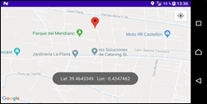
NOTE : Because the precise location consumes a lot, a balanced consumption has been chosen,
this is configurable through LocationRequest.PRIORITY_BALANCED_POWER_ACCURACY , the available ones are:
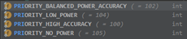 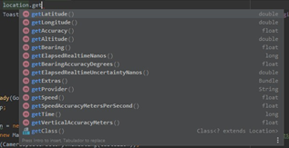
NOTE : In addition to latitude and longitude, through location we can also obtain other data, such as altitude, speed and precision.
Another interesting option for location is to be able to calculate the distance between the current location, and another that we send as
a parameter, location.distanteTo(Location des). Example:
In practice, we are going to import location data from an XML file that we will put as a resource in the project itself,
so that by selecting an option from the side menu we fill the map with markers, which will indicate the locations stored in the file.
This document will be called locations.xml, and we will place it inside the raw folder, along with the map style json previously seen in this topic.
The XML format will be as in the following example:
As can be seen, there are two types of locations, hotel and city, the first have the URL of their website as a fragment,
and the second the local tourist telephone number, this will be used later in practice to give it some functionality.
To read the XML we are going to use the W3C DOM methods.
We will need to create the data model, for which we will create a new class, inside the java folder, we go to our package, and we right click > New > kotlin Class
Location.kt
package com.catata.googlemapsexample
import android.content.Context
import org.w3c.dom.Document
import org.w3c.dom.Element
import org.w3c.dom.Node
import org.w3c.dom.NodeList
import org.xml.sax.SAXException
import java.io.IOException
import java.lang.reflect.Constructor
import javax.xml.parsers.DocumentBuilder
import javax.xml.parsers.DocumentBuilderFactory
import javax.xml.parsers.ParserConfigurationException
data class Location(
var title: String,
var fragment: String,
var tag: String,
var latitude: Double,
var longitude: Double,
) {
constructor():this("","","",0.0,0.0){
}
companion object {
fun readLocations(context: Context): List<Location> {
val locations = mutableListOf<Location>()
try {
val factory: DocumentBuilderFactory = DocumentBuilderFactory.newInstance()
val builder: DocumentBuilder = factory.newDocumentBuilder()
val doc: Document =
builder.parse(context.resources.openRawResource(R.raw.locations))
val root: Element = doc.documentElement
val items: NodeList = root.getElementsByTagName("location")
for (i in 0 until items.length) { //go through all elements
val locationNode: Node = items.item(i)
val location = Location()
for (j in 0 until locationNode.childNodes.length) { //go through children
val currentNode: Node = locationNode.childNodes.item(j)
//check if is an element
if (currentNode.nodeType === Node.ELEMENT_NODE) {
when (currentNode.nodeName.uppercase()) {
"TITLE" -> location.title = currentNode.childNodes.item(0).nodeValue
"FRAGMENT" -> location.fragment =
currentNode.childNodes.item(0).nodeValue
"TAG" -> location.tag = currentNode.childNodes.item(0).nodeValue
"LATITUDE" -> location.latitude =
currentNode.childNodes.item(0).nodeValue.toDouble()
"LONGITUDE" -> location.longitude =
currentNode.childNodes.item(0).nodeValue.toDouble()
}
}
} //end for 2 (children)
locations.add(location)
} //end for 1 (elementos)
} catch (e: ParserConfigurationException) {
e.printStackTrace()
} catch (e: IOException) {
e.printStackTrace()
} catch (e: SAXException) {
e.printStackTrace()
}
return locations
}
}
}
To test it now, we can put the following Toast in the first option of the side menu.
When testing we see how the title of the second item is displayed:
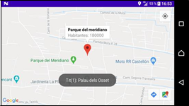
Normally we will need to receive the entire List<> first, and then go through it, it could be like this:
var titles:String = ""
val locations = Location.readLocations(this)
for (location:Location in locations){
titles += "- " + location.title + " "
}
Toast.makeText(this, "Titles: $titles", Toast.LENGTH_SHORT).show()
Here you have GoogleMaps app with some snippets of code.
Practice
Let's start from the base already created after following the previous point, DO NOT CHANGE the package name
Neither of the App, you would have problems with the KEY, or just create a new API Key, simply, for safety, save a copy of the folder before starting.
Therefore, we should already have the myMaps project created, when opening it you should see the map perfectly.
For this example, I have used the hotel and city location types, which are placed in the XML tag called precisely "tag", the values of said tag after
reading them from the file we will put them later in the Tag of each marker (which will be invisible).
Now you have to devise two different types of locations, that are to your liking but different from these, you have to get at least five
locations of each, and modify locations.xml so that those ten locations appear at least, the order does
not matter but put them interspersed better. Just like in my example, in the fragment tag,
those of a type they will have the URL of its website , and those of another will have its phone.
To get its exact latitudes/longitudes you can use the google Maps URL as shown below, it appears when you click on its marker. Look for places not too far away
so they look good on the map.
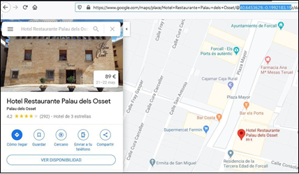
The intended functionality will be the following:
As soon as you enter myMaps, the camera should be focused on the town hall of your town, with a zoom between 5.0f and 12.0f as you see that it is better.
You don't have to see any marker. You also don't have to see the top right icon of my location. It would be ideal that the locations you choose are all
within that visible area, although it is not mandatory. Rotation with two fingers must be prohibited. Zoom icons +/- must be hidden.
Regarding the style of the map, you have to edit one through the online style editor website
https://mapstyle.withgoogle.com/ ,
do it to your liking, import it into the project in JSON and make that style be displayed, mine has stayed like this (focused on the city of Valencia):
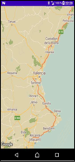
Put an icon consistent with the functionality of the App, and different from mine.
Overwrite the ic_launcher with the Image Asset, but don't delete the ic_launcher_round. Create it in legacy only and landscape mode. Mine is the following:
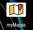
Configure the side menu as in the following image, it will have the same icon as the background photo.
But beware, in the icon leave the ic_launcher_round with the image of the Android robot's face
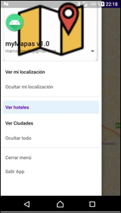
Notice that there are two separators, the three main options (see) are primary, that's why they look darker,
and the rest are secondary. Remember that in your practice it will not be hotels and cities
Give functionality to the last two options, Close menu and Exit App, since they are the simplest
Now we will make the code for the first option See my location.
To achieve it use the Google Location Services API as it is in the notes, therefore to activate the location is as
simple as calling requestLocations(). Once the coordinates have been calculated, you have to show a marker in that position,
requestLocations () then place the camera there, the marker will be a passport-size photo of us.
When you press the marker, you must see the title "My location", it also adds the label myposition to the marker using marker.tag = "myposition".
In addition, the marker and the camera have to move periodically if we move, this really only comes out since in the example of the notes the location was already
updated due to using a setInterval, so every time the location is updated we should will create a new marker.
To do this, you could create in the class a new attribute private List<Marker> mPosiciones = List<>() ,
and then in onLocationResult, go putting in that vector the markers,
mPosiciones.add(mMap.addMarker(xxx) , and then move the camera.
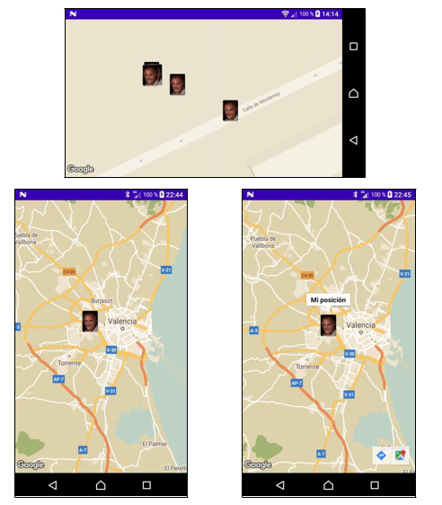
Expand the code so that, if we click on the title of our marker, our current coordinates appear in an AlertDialog,
configured as in the following image. Note that for this, you have to first use setOnInfoWindowClickListener to activate the event,
and then onInfoWindowClick to manage it, the coordinates are obtained from the reference to the marker object itself,
which is created and automatically sent to onInfoWindowClick(marker:Marker) when clicking on the title,
so you should use getPosition in the marker. You must send the information in the form of String to
the AlertDialog . The CANCEL button does not have to appear
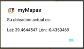
Now program the second option "Hide my location", which has to stop updating the location and delete all the markers.
To stop the location is as simple as calling removeLocations (). However, to delete the markers, keep in mind that they have been added to a vector,
therefore, we must go through it and delete the markers one by one. It would be something like this:
for(marker in mPositions){
marker.remove()
}
The See hotels option has some things (remember that in your practice they will not be hotels).
We must read through readLocations() all the XML, then we go through the List<> vector, and for
all the elements that have the label set to hotel (in your case the label will be another),
we will have to place them on the map by means of a marker with their corresponding coordinates. In addition, in each marker we will
add the title, the snippet, and the Tag that come in the same XML as title, fragment and tag respectively. On the other hand, you have to put
an icon consistent with the type of place to be pointed out, in my case a hotel, I call the resource a hotel. It is recommended to create a method
for this section, for example seeHotels()
With the option See cities (remember that yours will not be cities), obviously we intend the same as in the previous point,
but with the locations that have the label city. To differentiate the icon it will be different, in my case I call the icon resource city.
For this purpose, you can do another method seeCities() .
I propose better to modify the previous method so that it accepts a String, and call it seeMarkers(tag:String) ,
in this way the same method can be used for both types, that is, the call would be seeMarkers("hotel")
or seeMarkers("city"),
precisely when the hotel or city icons are called, which is precisely the label, the method is easy, even so we could require an if
to add one icon or another, depending on the label.
We see the result (we can see the title and the snippet added to the markers)
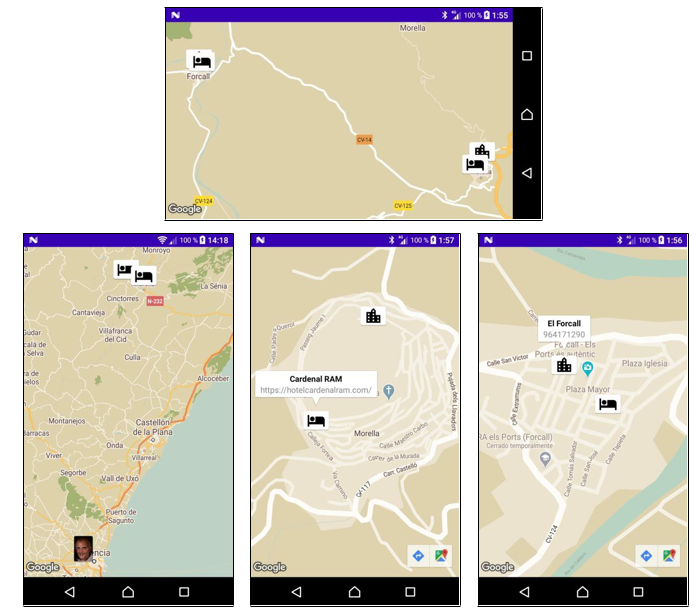
Make clicking on Hide all delete all the markers, including those of our location if it is active.
Just in case location is on, turn it off too. Look at the notes, the map has a method to clean it completely.
To finish, click on the title of the bookmark to open the corresponding activity, if it is a url it will show us the web page and if it is a phone it will open the call application.
For this you must read the marker label and depending on this do one thing or another.
This time you must deliver the complete project folder compressed in *.zip and add the *.APK too.
(Remember to do a clean Project before). The id of your project must be as always com.xxyyzz.mymaps (xx, the first two letters of the first name, yy, the first two
letters of the first last name, zz the first two letters of the second last name